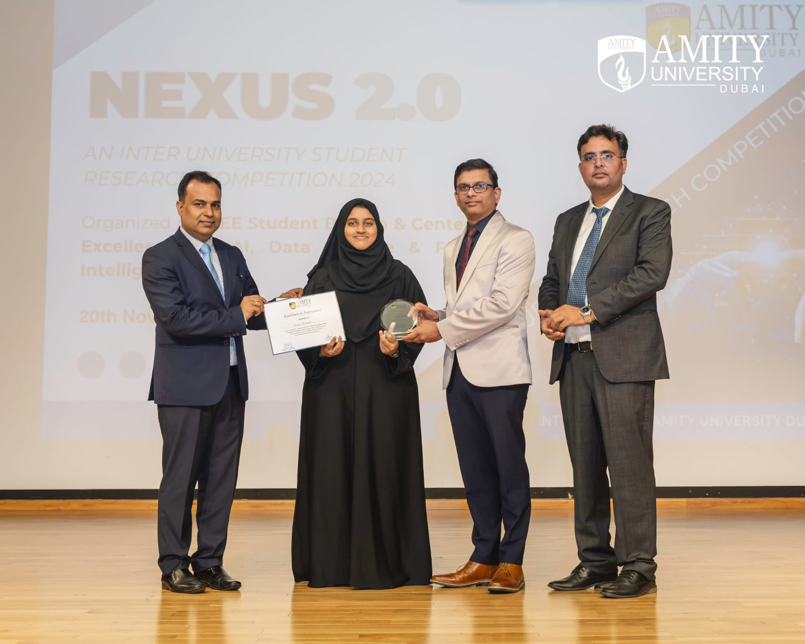
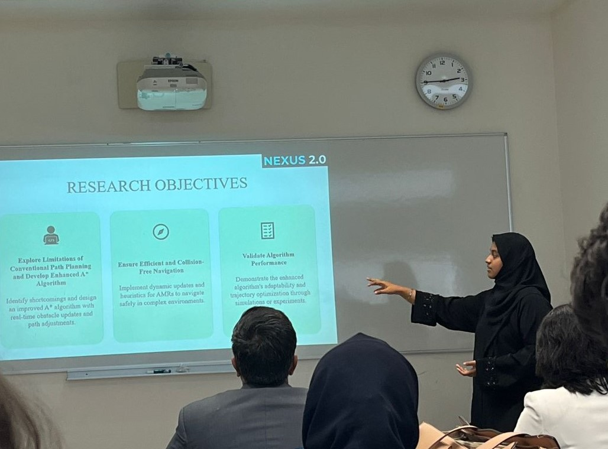

Nexus 2.0 – National Level Inter-University Student Research Competition 2024, organized by Amity University Dubai,
brought together students from various universities to present innovative research across multiple disciplines.
Our paper, "Path Planning for Autonomous Mobile Robots Using A Algorithm,"* secured the 1st Runner-Up position under
Track 3 – Technology Applications in Mechanical, Automation, and Civil Structures.
In collaboration with my co-author, Kareena Mueenuddin, we focused our research on enhancing the A* Algorithm for efficient
navigation in Autonomous Mobile Robots (AMRs), particularly in complex and dynamic environments. Through MATLAB simulations,
we demonstrated how our approach improved path planning and obstacle avoidance, making AMRs more adaptable to real-world
scenarios. This competition was an incredible learning experience, and I am grateful for the opportunity to represent my
university.
Hajara Sabnam

1st Runner Up in NEXUS 2.0 - A National Level Inter-University Student Research Competition 2024

